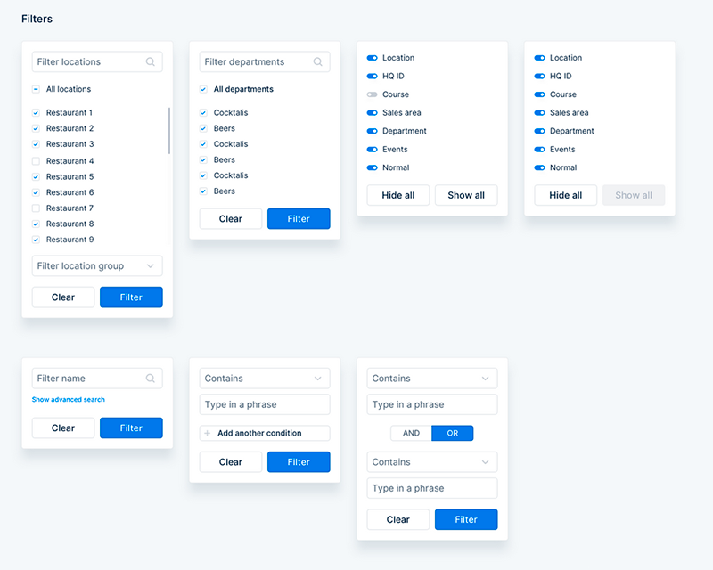
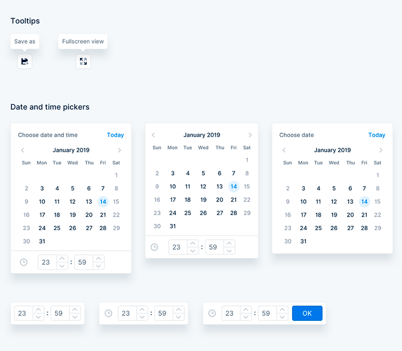
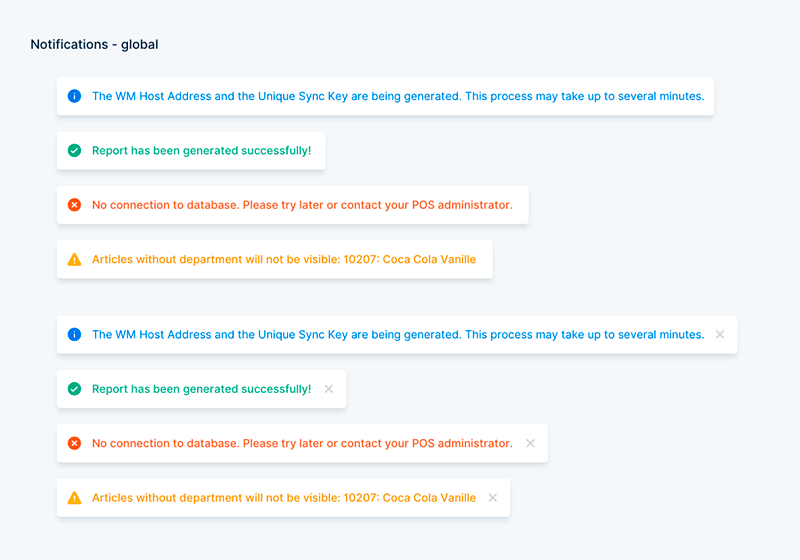

unTill Base
HTML and React components library for developing Untill Air Shell plugins.



How to get started
Just add following code to your web page <head> section and use elements from library.
Check
Documentation
section for more information about components.
<link rel="stylesheet" href="
https://www.dev.untill.com/untill-air-shell/base/css/untill-base.css
" />
<script src="
https://www.dev.untill.com/untill-air-shell/base/src/js/untill-base.js
" type="text/javascript"></script>